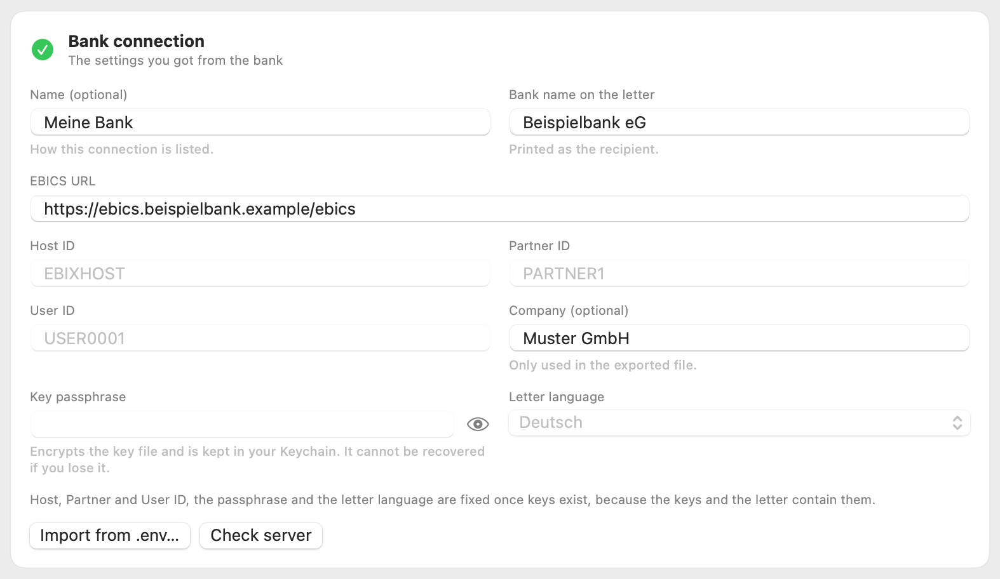
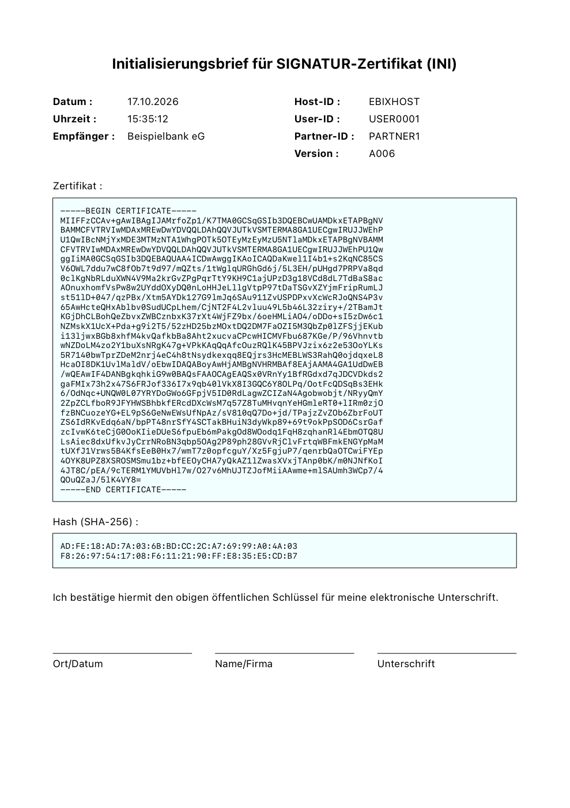
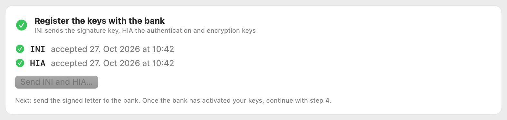
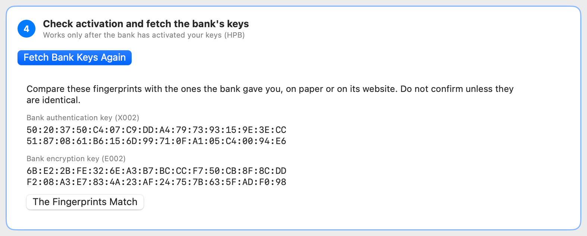
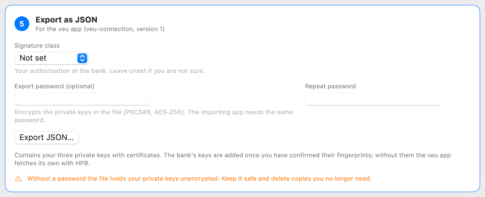

Keybics – Benutzerhandbuch
Version 1.1 · Stand Oktober 2026
1. Wofür ist Keybics?
Wer ein Bankkonto per EBICS anbinden will, muss der Bank zuerst seine öffentlichen Schlüssel übermitteln und von der Bank freischalten lassen. Keybics führt Sie durch genau diesen Vorgang. Die App
- erzeugt Ihre drei Schlüssel (Signatur, Authentifizierung, Verschlüsselung) auf Ihrem Mac,
- erstellt den Initialisierungsbrief als PDF zum Ausdrucken und Unterschreiben,
- übermittelt die Schlüssel an die Bank (INI und HIA),
- prüft später, ob die Bank Sie freigeschaltet hat, und holt die Bankschlüssel ab (HPB),
- exportiert die gesamte Verbindung als JSON-Datei für Ihre Anwendung (veu-app).
Keybics ruft keine Kontoauszüge ab und löst keine Zahlungen aus. Es unterstützt EBICS 3.0 (H005). Bietet Ihre Bank nur EBICS 2.x an, kann die App nicht verwendet werden.
Der Ablauf im Überblick
| Schritt | Was passiert | Wer |
|---|---|---|
| 1 | Bankdaten eintragen | Sie |
| 2 | Schlüssel und Brief erzeugen | App |
| 3 | Schlüssel an die Bank senden (INI/HIA), Brief ausdrucken, unterschreiben und an die Bank schicken | Sie |
| – | Bank prüft den Brief und schaltet frei (je nach Bank Stunden bis Tage) | Bank |
| 4 | Freischaltung prüfen, Bankschlüssel abholen und Fingerabdrücke vergleichen | Sie |
| 5 | Verbindung als JSON exportieren | Sie |
Schritte 1 bis 3 erledigen Sie am selben Tag. Zwischen Schritt 3 und 4 liegt die Wartezeit auf die Bank. Die App darf in dieser Zeit geschlossen werden: Alles bleibt gespeichert.
2. Voraussetzungen
Ein Mac mit macOS 14 (Sonoma) oder neuer. Intel und Apple Silicon werden unterstützt.
Diese Angaben von Ihrer Bank:
| Angabe | Bedeutung |
|---|---|
| EBICS-URL | Adresse des EBICS-Servers der Bank, beginnt mit
https:// |
| Host-ID | Kennung des Bankservers |
| Partner-ID | Kennung Ihres Unternehmens (Kunden-ID) |
| User-ID | Ihre Teilnehmerkennung |
Außerdem benötigen Sie den Namen der Bank (er erscheint als Empfänger auf dem Brief) und eine selbst gewählte Passphrase.
Passphrase: Sie verschlüsselt Ihre Schlüsseldatei. Wählen Sie eine lange, nur Ihnen bekannte Zeichenfolge und bewahren Sie sie getrennt auf. Sie lässt sich nicht wiederherstellen. Ohne sie sind die Schlüssel unbrauchbar, und die Anbindung muss bei der Bank neu eingerichtet werden.
3. Installation
- Öffnen Sie die Datei
Keybics-1.1.dmg. - Ziehen Sie Keybics auf den Ordner Programme.
- Starten Sie Keybics aus dem Programme-Ordner.
Die App ist von Apple geprüft (notarisiert) und startet ohne Warnung. Sie sendet Daten ausschließlich an die EBICS-URL, die Sie eintragen.
4. Schritt für Schritt
Das Fenster hat links die Liste Ihrer Verbindungen und rechts die fünf Schritte. Ein grüner Haken markiert einen erledigten Schritt, ein blauer Rahmen den nächsten. Spätere Schritte sind ausgegraut, bis sie an der Reihe sind. Die Beschriftungen in der App sind englisch. Sie stehen im Handbuch in Anführungszeichen.
Eine neue Verbindung legen Sie mit dem + in der Symbolleiste an (Tastenkürzel ⌘N). Sie können beliebig viele Verbindungen verwalten, etwa mehrere Banken.
Schritt 1: Bankverbindung eintragen

| Feld | Eintrag |
|---|---|
| Name (optional) | Wie die Verbindung in der Liste heißt |
| Bank name on the letter | Der Name der Bank als Empfänger auf dem Brief |
| EBICS URL | Die Adresse des EBICS-Servers |
| Host ID, Partner ID, User ID | Die Angaben der Bank, genau so wie erhalten (Groß- und Kleinschreibung beachten) |
| Company (optional) | Ihr Firmenname, wird nur in die Exportdatei geschrieben |
| Key passphrase | Ihre Passphrase. Das Auge-Symbol blendet sie ein. Die App legt sie im Schlüsselbund ab |
| Letter language | Sprache des Briefs: Deutsch oder English |
Ihre Angaben speichert die App sofort. Haben Sie die Daten bereits in
einer .env-Datei, übernimmt Import from
.env… sie mit einem Klick (Variablen EBICS_URL,
EBICS_HOST_ID, EBICS_PARTNER_ID,
EBICS_USER_ID, EBICS_PASSPHRASE,
EBICS_NAME, EBICS_BANK_NAME).
Check server fragt die Bank, welche EBICS-Versionen sie anbietet. Dabei werden keine Schlüssel gesendet. Die Meldung sollte bestätigen, dass der Server EBICS 3.0 (H005) anbietet. Ist die Verbindung nicht möglich, prüfen Sie die URL.
Schritt 2: Schlüssel und Brief erzeugen
Klicken Sie auf Create Keys and Letter. Die App erzeugt drei RSA-Schlüssel mit 4096 Bit und ein Zertifikat für jeden. Das dauert einige Sekunden bis etwa eine halbe Minute, ein Hinweis am unteren Fensterrand zeigt den Fortschritt. In diesem Schritt wird nichts an die Bank gesendet.
Danach zeigt die App den Brief als Vorschau. Er hat drei Seiten:
| Seite | Inhalt |
|---|---|
| 1 | Signaturschlüssel (INI, Version A006) mit Unterschriftszeile |
| 2 | Authentifizierungsschlüssel (HIA, Version X002) |
| 3 | Verschlüsselungsschlüssel (HIA, Version E002) mit Unterschriftszeile |

Jede Seite enthält das Zertifikat und dessen Hash (SHA-256). Anhand des Hashs prüft die Bank, ob die elektronisch übermittelten Schlüssel zu Ihrem Brief gehören.
Mit den Schaltflächen unter der Vorschau gehen Sie so weiter:
- Print… druckt den Brief.
- Save PDF… speichert ihn als PDF-Datei, zum Beispiel für den Versand per E-Mail oder Fax, sofern Ihre Bank das zulässt.
- Show in Finder zeigt den Ordner mit der Schlüsseldatei.
Drucken Sie den vollständigen Brief, unterschreiben Sie ihn als Kontoinhaber (Ort/Datum, Name/Firma, Unterschrift) und senden Sie ihn auf dem von der Bank vorgesehenen Weg ein. Welcher das ist (Post, Fax, Scan), sagt Ihnen die Bank.
Sind Schlüssel einmal erzeugt, sind Host-, Partner- und User-ID, Passphrase und Briefsprache gesperrt, weil Schlüssel und Brief diese Angaben enthalten. Name, Bankname, URL und Firma können Sie weiter ändern.
Schritt 3: Schlüssel bei der Bank anmelden

Klicken Sie auf Send INI and HIA… und bestätigen Sie die Rückfrage. Die App sendet
- INI: den Signaturschlüssel und
- HIA: den Authentifizierungs- und den Verschlüsselungsschlüssel.
Nimmt die Bank beides an, erscheinen zwei grüne Haken mit Datum. Ab jetzt wartet die Verbindung auf die Freischaltung. Die Bank schaltet Sie frei, sobald sie den unterschriebenen Brief erhalten und die Hashes geprüft hat.
Schlägt ein Teil fehl, zum Beispiel HIA, bleibt INI als erledigt markiert. Nach dem Beheben der Ursache sendet die Schaltfläche (dann Send HIA…) nur noch das Fehlende. Was die Bank schon angenommen hat, wird nie ein zweites Mal gesendet.
Schritt 4: Freischaltung prüfen und Bankschlüssel abholen

Sobald die Bank die Freischaltung bestätigt hat, klicken Sie auf Check Activation. Die App fragt die Bankschlüssel ab (HPB).
- Noch nicht freigeschaltet: Sie sehen eine orange Meldung mit dem EBICS-Code der Bank. Das ist vor der Freischaltung normal. Versuchen Sie es später erneut.
- Freigeschaltet: Die App speichert die Bankschlüssel und zeigt deren Fingerabdrücke an.
Vergleichen Sie die Fingerabdrücke mit denen, die Ihnen die Bank mitgeteilt hat, auf Papier oder auf ihrer Website. Erst wenn sie vollständig übereinstimmen, klicken Sie auf The Fingerprints Match. Der Vergleich schützt Sie davor, dass jemand zwischen Ihnen und der Bank falsche Bankschlüssel unterschiebt. Stimmen die Werte nicht überein, bestätigen Sie nicht und wenden Sie sich an die Bank.
Holen Sie die Bankschlüssel später erneut ab und haben sie sich geändert, verlangt die App eine neue Bestätigung.
Schritt 5: Exportieren

Export JSON… schreibt die Verbindung in eine Datei im Format veu-connection (Version 1). Sie enthält Adresse, IDs, Ihre drei privaten Schlüssel mit Zertifikaten und die Bankschlüssel, sobald deren Fingerabdrücke bestätigt sind. Vor der Bestätigung fehlen die Bankschlüssel. Die empfangende Anwendung holt sie dann selbst per HPB.
Signature class (E, A, B, T) ist Ihre Unterschriftsberechtigung bei der Bank. Die Anmeldung bei der Bank legt sie nicht fest. Wählen Sie sie nur, wenn Sie sie kennen. Bei Not set lässt die App das Feld weg.
Export password (optional) verschlüsselt die drei privaten Schlüssel in der Datei (verschlüsseltes PKCS#8, AES-256). Geben Sie das Passwort zweimal ein. Stimmen beide Eingaben nicht überein, bleibt Export JSON… gesperrt. Zertifikate und Bankschlüssel sind öffentlich und bleiben unverschlüsselt. Die empfangende Anwendung fragt beim Import nach demselben Passwort. Die App speichert das Passwort nicht. Es lässt sich nicht wiederherstellen. Ohne das Passwort ist die Datei unbrauchbar.
Ohne Export-Passwort enthält die Datei Ihre privaten Schlüssel unverschlüsselt. Jeder, der die Datei besitzt, kann sich gegenüber der Bank als Sie ausgeben. Vergeben Sie deshalb möglichst ein Passwort. Übertragen Sie die Datei nur auf sicherem Weg, speichern Sie sie nicht in Cloud-Ordnern oder E-Mails und löschen Sie nicht mehr benötigte Kopien.
5. Verbindungen verwalten
- Verbindung löschen: Rechtsklick auf den Eintrag in der Liste, dann Delete Connection…. Dabei werden Schlüsseldatei, Brief und gespeicherte Passphrase von diesem Mac entfernt. Exportieren Sie vorher, wenn Sie die Schlüssel noch brauchen.
- Schlüssel neu erzeugen: Unter dem Brief gibt es Delete Keys…. Die Schlüssel und der Brief werden gelöscht, danach können Sie neue erzeugen. Hat die Bank Ihre Schlüssel schon, müssen Sie die Anmeldung mit der Bank neu durchlaufen. Eine Rückfrage warnt Sie davor.
- Activity log: Am Ende der Seite zeigt eine aufklappbare Liste, was gesendet wurde und was die Bank geantwortet hat. Sie enthält weder Schlüssel noch Passphrase und ist hilfreich, wenn Sie den Support der Bank kontaktieren.
6. Sicherheit und Datenablage
| Was | Wo |
|---|---|
| Schlüsseldatei (verschlüsselt mit Ihrer Passphrase) | ~/Library/Application Support/EbicsStart/Connections/<Kennung>/keys.json |
| Initialisierungsbrief | im selben Ordner: ini-letter.pdf |
| Einstellungen und Fortschritt (ohne Geheimnisse) | im selben Ordner: connection.json |
| Protokoll | im selben Ordner: activity.log |
| Passphrase | im Schlüsselbund (Eintrag „Keybics key passphrase“) |
- Bei der Version aus dem Mac App Store liegt der Ordner im
App-Container:
~/Library/Containers/com.etonec.keybics/Data/Library/Application Support/EbicsStart/…. „Show in Finder“ öffnet den richtigen Ort. - Schlüssel werden ausschließlich auf Ihrem Mac erzeugt und verlassen ihn nur, wenn Sie exportieren. Die Bank erhält die öffentlichen Teile.
- Die Dateien sind nur für Ihr Benutzerkonto lesbar.
- Datensicherung: Time Machine sichert den Ordner mit. Für eine zusätzliche Sicherung exportieren Sie die Verbindung und verwahren die Datei so, wie es ihre Sensibilität verlangt (siehe Warnung bei Schritt 5).
- Gehen Schlüssel oder Passphrase verloren, kann die Bank die Anbindung zurücksetzen, und Sie beginnen bei Schritt 2 neu.
7. Fehlermeldungen und Hilfe
Meldet die Bank einen Fehler, zeigt Keybics den EBICS-Code, dessen Bezeichnung und, wo möglich, einen Hinweis.
| Code | Bedeutung und was zu tun ist |
|---|---|
| 091002, 091004 | Die Bank sieht den Teilnehmer noch nicht als bereit an. Vor der Freischaltung normal. Warten Sie auf die Bestätigung der Bank. |
| 061001 | Die Bank konnte die Signatur nicht prüfen. Vor der Freischaltung die übliche Antwort. Danach besitzt die Bank andere Schlüssel als diese Verbindung. Wenden Sie sich an die Bank. |
| 091003 | Teilnehmer unbekannt. Prüfen Sie Host-, Partner- und User-ID und ob INI und HIA angenommen wurden. |
| 091011 | Die Host-ID ist der Bank unbekannt. |
| 091010, 061002 | Das Nachrichtenformat wurde abgelehnt. Prüfen Sie URL und IDs und ob die Bank EBICS 3.0 anbietet. |
| 091103 | Verdacht auf Wiederholung. Prüfen Sie Datum, Uhrzeit und Zeitzone Ihres Macs. |
| 091218 | Die Bank besitzt diese Schlüssel bereits. Wurde INI oder HIA schon angenommen, senden Sie es nicht erneut. |
| 091207, 091217, 091219, 091214 | Die Bank handhabt Zertifikate anders. Fragen Sie nach ihrer Zertifikatsrichtlinie (X.509, selbstsignierte Zertifikate). |
Weitere typische Situationen:
| Meldung oder Situation | Ursache und Abhilfe |
|---|---|
| „Enter a key passphrase first“ | Die Passphrase fehlt. Tragen Sie sie in Schritt 1 ein. |
| „Wrong passphrase, or the key file is damaged“ | Die Passphrase stimmt nicht mit der beim Erzeugen verwendeten überein. Tragen Sie die ursprüngliche ein. |
| „Could not reach the bank“ | Keine Internetverbindung oder falsche URL. |
| „Settings incomplete“ in der Liste | Ein Pflichtfeld in Schritt 1 fehlt oder ist ungültig. Der Hinweis unter den Schaltflächen nennt es. |
| Bank antwortet mit HTTP-Status 4xx oder 5xx | URL falsch oder Server der Bank gestört. Versuchen Sie es später erneut. |
Wenden Sie sich bei Fragen zur Freischaltung, zu Fingerabdrücken oder zu Zertifikaten an die EBICS-Betreuung Ihrer Bank und nennen Sie den Code aus der Meldung. Das Activity log hilft dabei. Schicken Sie niemandem Ihre Schlüssel, die Exportdatei oder Ihre Passphrase.
8. Häufige Fragen
Kann ich Schritt 4 jederzeit wiederholen? Ja. Fetch Bank Keys Again holt die Bankschlüssel erneut. Haben sie sich geändert, müssen Sie die Fingerabdrücke neu bestätigen.
Muss die App während der Wartezeit offen bleiben? Nein. Beim nächsten Start steht die Verbindung im selben Zustand bereit.
Warum drei Schlüssel? EBICS trennt Aufgaben: Der Signaturschlüssel (A006) unterschreibt Aufträge, der Authentifizierungsschlüssel (X002) weist Ihre Nachrichten gegenüber der Bank nach, der Verschlüsselungsschlüssel (E002) schützt die Daten, die die Bank Ihnen sendet.
Kann ich Schlüssel aus einem früheren Programm weiterverwenden? Nein, die App legt immer neue Schlüssel an. Eine bestehende Anbindung bleibt unberührt, solange Sie keine neue Anmeldung bei der Bank abschließen.
Mehrere Benutzer oder Banken? Legen Sie pro Bank und Benutzer eine eigene Verbindung an.
9. Technische Angaben
| Protokoll | EBICS 3.0, Version H005 |
| Aufträge | HEV, INI, HIA, HPB |
| Schlüssel | A006, X002 und E002, jeweils RSA mit 4096 Bit |
| Zertifikate | selbstsigniert, SHA-256 mit RSA, ohne Ablaufdatum. Für INI/HIA zulässig, sofern die Bank keine Zertifikate einer Zertifizierungsstelle verlangt |
| Schlüsseldatei | JSON, jeder Eintrag mit AES-256 verschlüsselt (Schlüssel aus der Passphrase per PBKDF2) |
| Exportformat | veu-connection, Version 1 |
| Briefformat | PDF, DIN A4 |